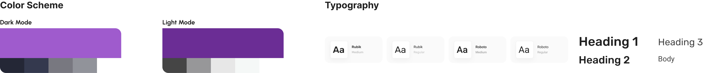

Ideation
I went through many ideas that I refined while testing it on users.
The first wireframes were a mere showcase of evidence that the user could play and interact with to see how different diets affect the world.
lt was very straightforward but lacking user motivation...why would my users even want to come
to my application or once they did, stay on it? ... it was not going to work.
Refining with Purpose: The Octalysis Framework
I based this part of my project on the Core Drives of the Octalysis Framework from Actionable Gamification by Yu-Kai Chou.
We as human beings need motivation to do... well, almost anything. So I aimed to create an engaging and motivating user
experience by leveraging the 8 Core Drives of Actionable Gamification. Each core drive plays a crucial role in ensuring
that users are not only drawn to the app but also find value and motivation in their journey towards better nutrition and sustainability.
1. Epic Meaning & Calling: My idea was to make users users feel like they are heroes on a mission to save the planet through their daily choices.
2. Development & Accomplishment: By displaying a score based on their food choices as well as cumulative metrics such as land spared, CO2 reduced, animals helped, and water saved, users can visually and numerically see their accomplishments, which fuels their motivation to continue making positive changes.
3. Empowerment of Creativity & Feedback: Personalized diet profiles and actionable recommendations for improvement. AI chat feature, "Ask Seed," further enhances this drive by providing personalized assistance and responding to user queries, making the experience interactive and dynamic.
4. Ownership & Possession: Users can track their dietary habits and their environmental impact. This sense of ownership is strengthened through the detailed diet profiles and cumulative achievements.
5. Social Influence & Relatedness: The app encourages community engagement through collective challenges such as Veganuary.
6. Scarcity & Impatience: "Food Print" leverages the drive of scarcity by introducing limited-time community challenges and seasonal events. This drive keeps the app dynamic and engaging, encouraging users to return regularly.
7. Unpredictability & Curiosity: The app keeps users curious and engaged by continually offering new articles and resources in the Explore tab. The AI chat, "Ask Seed," adds an element of unpredictability by providing personalized and varied responses to user queries.
8. Loss & Avoidance: The visual representation of the world on a low scores taps into the drive of loss and avoidance. This drive encourages users to maintain their good habits and strive for continuous improvement to avoid losing their progress.
User Flow
Typography, colors, logo creations

Color Scheme
In designing the "Food Print" app, I opted for a purple color scheme. This choice was driven by the need
to create a visually appealing and cohesive user experience that accommodates the app's scale system, which ranges from red (indicating poor performance) to green (indicating optimal performance). Purple served as a neutral and harmonious color that would not conflict with the red-to-green gradient used to indicate different states within the app.
Purple is often associated with creativity, wisdom, and calmness, which aligns well with the app's goals
of promoting mindful eating and sustainable practices. Furthermore, purple provides a sense of elegance and
sophistication, making the app visually appealing and inviting to users.
Logo Design
The logo for "Food Print" was crafted to symbolize the core values and mission of this project. The logo features a print in the form of a carrot, combining two essential elements:
1. Carrot Shape: The carrot represents healthy eating and nutrition, which are central to the app's purpose. Carrots are commonly associated with health and wellness, making them a fitting symbol for an app focused on promoting healthy dietary habits.
2. Print Design: The print element within the carrot shape signifies the impact or "footprint" that users' dietary choices have on their health and the environment. This concept ties back to the app's name, "Food Print," emphasizing the importance of mindful eating and sustainability.